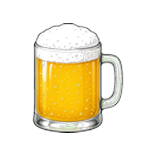
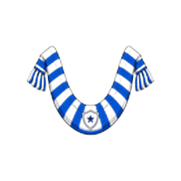

Kanon laut Absprache mit Icon-Agents: Branch
currency-icons-clean-dba3 →
game/public/icons/ui/currency-*.png
(Gold-Krone, Bierglas, Fan-Schal, Sicherheitsschild). HUD = Logo + Live-Zahl.
AI-Renders mit schwarzem Schaum waren falsch und sind entfernt. Bei kleiner
als ~36px wirkt der Kanon-Schaum grau — deshalb Chip-Icons hier @40px.
Branch-Vergleich siehe PNGs im Ordner.

Bier
FanartikelVier einzelne Pills in einem gemeinsamen Glas-Ring, zentriert über dem Spielfeld. Icons groß lesbar, Zahlen farbig. Minimaler Flächenbedarf — Scoreboard darunter bleibt frei.
Passt zu Mobile/Querformat; wenig Holz-Chrome im HUD.
Eine durchgehende geschnitzte Leiste (gleiche Holz-Textur wie Personen-/Gebäude-Rail). Vier gleich breite Slots mit Trennern — Icon + Zahl, keine Pill-Rahmen. Wirkt wie Teil des Matchday-UI-Systems.
Empfohlen, wenn Wallet optisch zu den braunen Action-Cards gehören soll.
Wallet sitzt direkt unter dem Scoreboard als dunkles Tray mit vier eingelassenen Zellen. Icon oben, Zahl, kurzes Label — klarer Cluster „Match-Status“, mehr vertikale Höhe.
Mehr Lesbarkeit/Labels; braucht etwas Platz über dem Spielfeld.